This website is entitled "Ten Things to Know About Discovering Python: A Beginners Guide".
Python is a popular programming language. It was created by Guido van Rossum, and released in 1991.
It is used for:
• web development (server-side),
• software development,
• mathematics,
• system scripting.
• Python can be used on a server to create web applications.
• Python can be used alongside software to create workflows.
• Python can connect to database systems. It can also read and modify files.
• Python can be used to handle big data and perform complex mathematics.
• Python can be used for rapid prototyping, or for production-ready software development.
• Python works on different platforms (Windows, Mac, Linux, Raspberry Pi, etc).
• Python has a simple syntax similar to the English language.
• Python has syntax that allows developers to write programs with fewer lines than some other programming languages.
• Python runs on an interpreter system, meaning that code can be executed as soon as it is written. This means that prototyping can be very quick.
• Python can be treated in a procedural way, an object-oriented way or a functional way.
• The most recent major version of Python is Python 3, which we shall be using in this Beginner's Guide. However, Python 2, although not being updated with anything other than security updates, is still quite popular.
• In this Beginner's Guide, Python will be written in a text editor. It is possible to write Python in an Integrated Development Environment, such as Thonny, Pycharm, Netbeans or Eclipse, which are particularly useful for managing larger collections of Python files.
• Python was designed for readability, and has some similarities to the English language with influence from mathematics.
• Python uses new lines to complete a command, as opposed to other programming languages which often use semicolons or parentheses.
• Python relies on indentation, using whitespace, to define scope; such as the scope of loops, functions and classes. Other programming languages often use curly-brackets for this purpose.
As we learned in the previous page, Python syntax can be executed by writing directly in the Command Line:
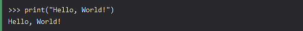Or by creating a python file on the server, using the .py file extension, and running it in the Command Line:
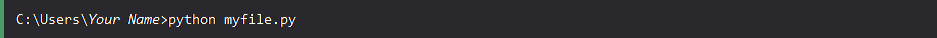Indentation refers to the spaces at the beginning of a code line.
Where in other programming languages the indentation in code is for readability only, the indentation in Python is very important.
Python uses indentation to indicate a block of code.
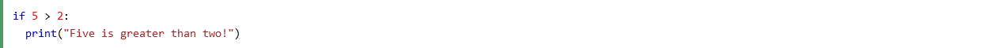Python will give you an error if you skip the indentation:
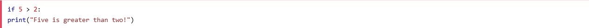The number of spaces is up to the user, the most common use is four, but there must be at least one space.
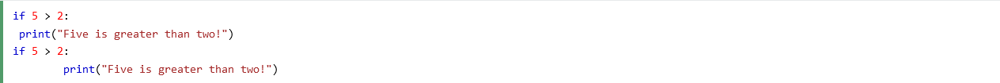You have to use the same number of spaces in the same block of code, otherwise Python will give you an error:
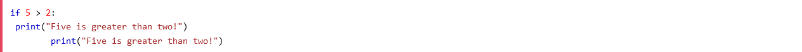Variables are containers for storing data values.
Python has no command for declaring a variable.
A variable is created the moment you first assign a value to it.
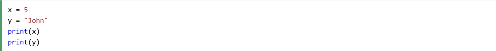Variables do not need to be declared with any particular type, and can even change type after they have been set.
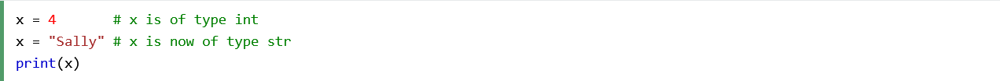If you want to specify the data type of a variable, you can do so with this.
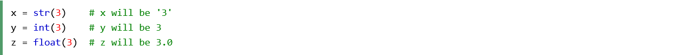You can get the data type of a variable with the type() function.
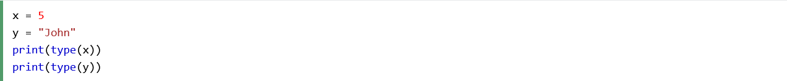String variables can be declared either by using single or double quotes:
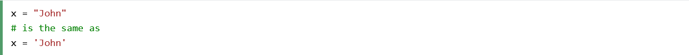Variable names are case-sensitive.
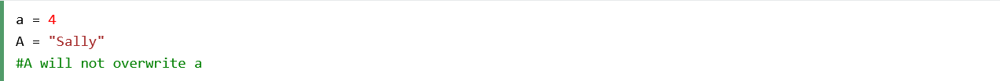Comment: According to the Oxford Languages dictionary, the adjective "case sensitive" can mean, in the context of a computer program or function, being able to differentiate between upper and lower case.
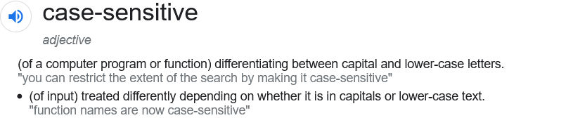Comments can be used to explain Python code.
Comments can be used to make the code more readable.
Comments can be used to prevent execution when testing code.
Comments starts with a #, and Python will ignore them:
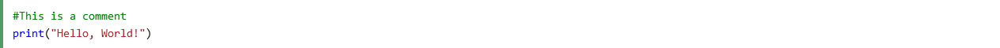Comments can be placed at the end of a line, and Python will ignore the rest of the line:
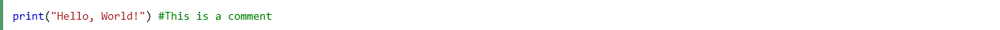A comment does not have to be text that explains the code, it can also be used to prevent Python from executing code:
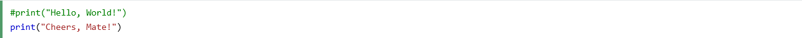Python does not really have a syntax for multi line comments.
To add a multiline comment you could insert a # for each line:
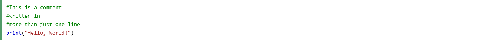Or, you can use a multiline string.
Since Python will ignore string literals that are not assigned to a variable, you can add a multiline string (triple quotes) in your code, and place your comment inside it:
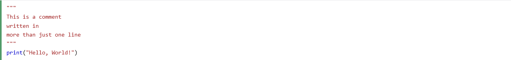As long as the string is not assigned to a variable, Python will read the code, but then ignore it, and you have made a multiline comment.
There are three numeric types in Python:
• int
• float
• complex
Variables of numeric types are created when you assign a value to them:
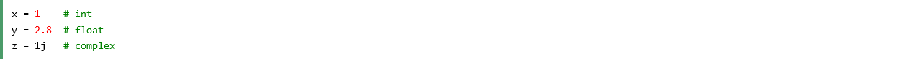To verify the type of any object in Python, use the type() function:
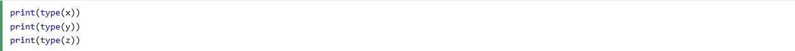Int, or integer, is a whole number, positive or negative, without decimals, of unlimited length.
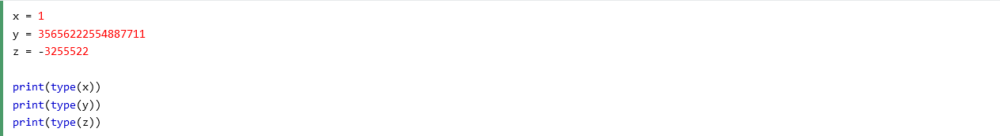Float, or "floating point number" is a number, positive or negative, containing one or more decimals.
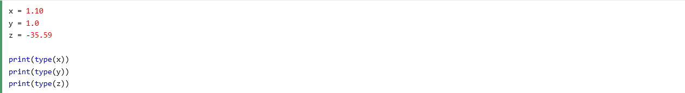Float can also be scientific numbers with an "e" to indicate the power of 10.
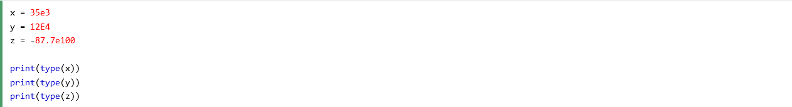Complex numbers are written with a "j" as the imaginary part:
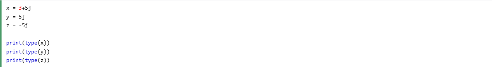You can convert from one type to another with the int(), float(), and complex() methods:
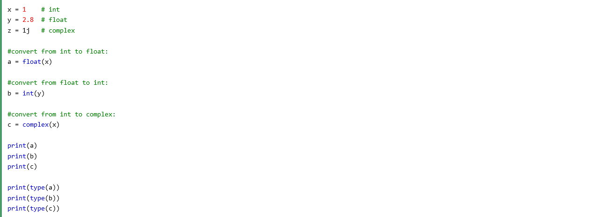Comment: You cannot convert complex numbers into another number type.
Python does not have a random() function to make a random number, but Python has a built-in module called random that can be used to make random numbers:
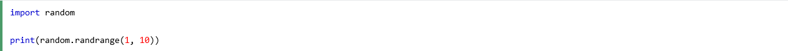